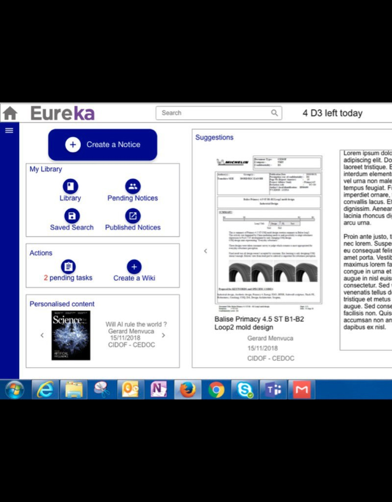
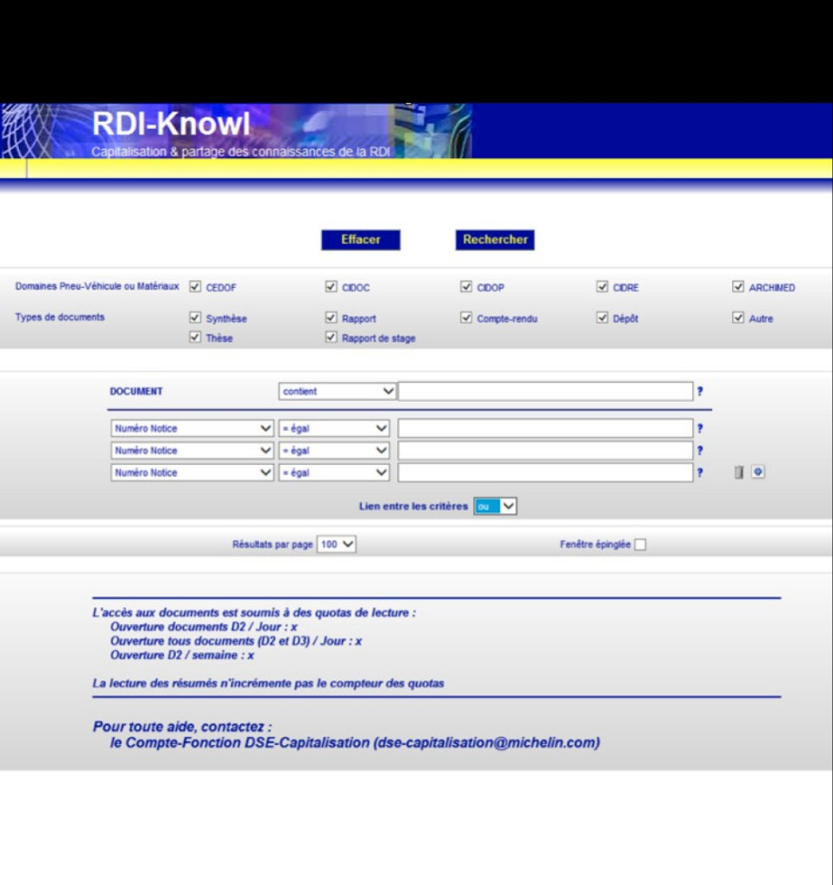

Create a new solution for Michelin scientific documentation management
KPIs
+10% scientific articles published
Compared to the previous year
User satisfaction : 46% → 84%
Compared to the previous year
The company
The R&D division of Michelin counts more than 6 000 engineers and scientists. They have very specific needs and work on tomorrow’s tire technologies, to achieve these state-of-the-art performances they need to have a solid scientific documentation management tool.
What was the problem?
Michelin R&D library database is not widely used, article upload is slow and complicated. Reading and bookmarking articles do not answer user needs. In this context, Michelin Scientists usually save articles on their computer, and even, when needed, send them via mail. To improve the use of the product, I made the hypothesis that a shorter, simplified upload workflow would solve those problems.

The strategy I implemented
I was the sole UX designer within a team composed of a Product manager, a scrum master and 3 developers. I did the UX Research and the design for the new product. Those steps have been done in coordination with the various stakeholders.
Activities
After several shadowing and interviews with users and stakeholders, I was able to identify the different problems within the « current » product. The upload of scientific documents was not understood by users, there were too many options and specific fields. The document visualisation rules and possibilities were also too strict and clumsy, mostly because of security issues.
Challenges
The biggest challenge I faced was to find a way to make every user, with their different background (America, Asia, Europe), use the product efficiently. Usability testing done during the project allowed me to discard designs that were not usable for one or the other user type.

Solution
After interviews and shadowing, I designed a new version for the product, which was based on Microsoft SharePoint. I did usability testing to be sure that the most important function of the product, document upload, would be usable. The change of worlkflow allowed user to do upload faster and also avoid them the hassle of searching and filling various fields by themselves. Once every MVP function was validated through usability testing I was able to deliver a product that was faster and more useful for users.
Results and metrics
Users saw in improvement of their tool both in speed and in reactivity, which allowed them to use the product without waiting for screens to load as they were used to. Document visualisation has also been improved which increased the use of the database. The makeover led to an increase of 10% in scientific articles compared to the previous year. The user satisfaction increased from 46% to 84% in the same time.

Take-away
This project taught me to conceive applications with high security constraints due to the confidentiality and critical state of the documents they contain. Working with several cultures and being able to satisfy them all has also been a great take-away.